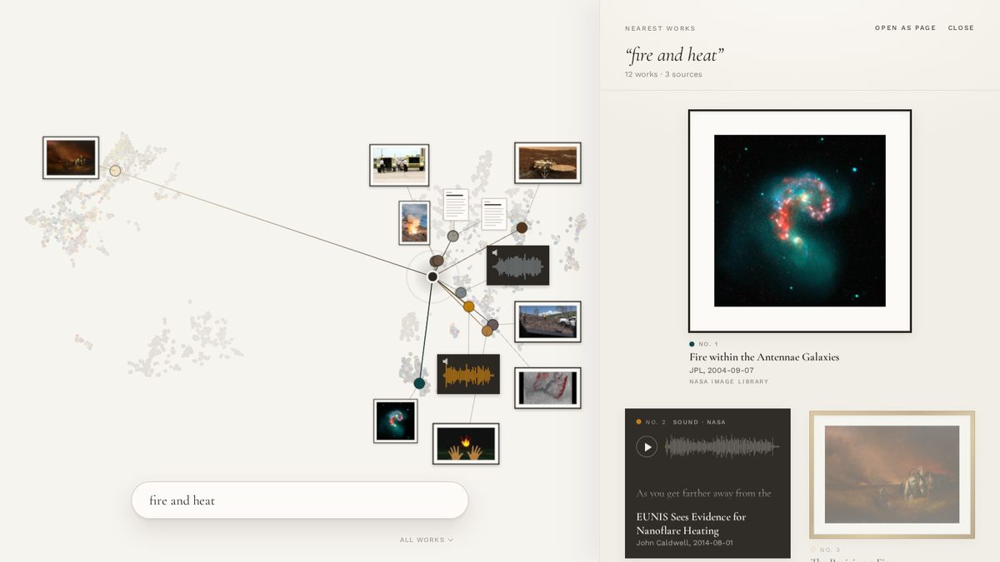
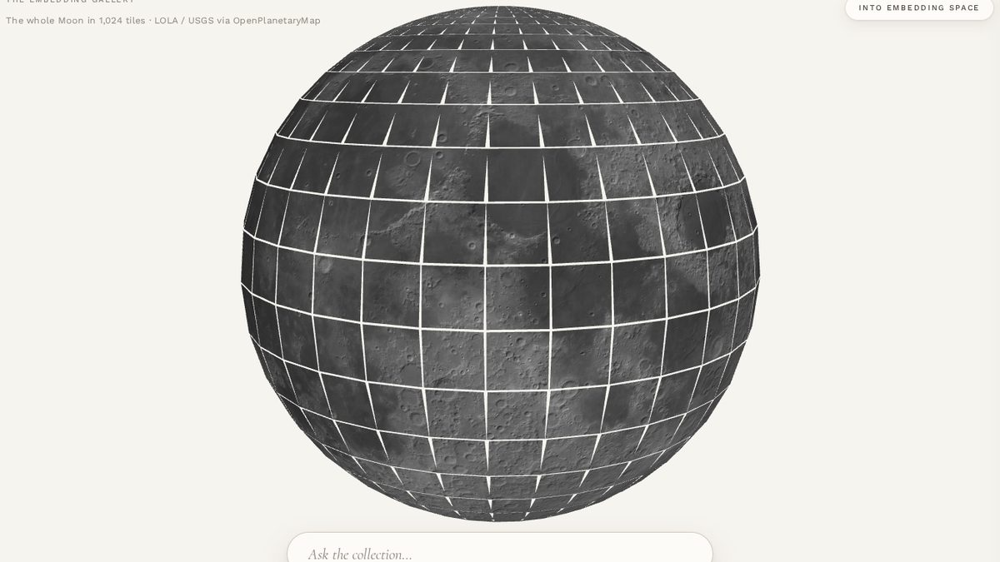

Ode · EmbeddingGemma 2 × Gemma 4
The Embedding Gallery
Type a search and watch where it lands. EmbeddingGemma 2 puts pictures, passages, video clips and sounds in one space, so a query finds its neighbours whatever form they take. Gemma 4 read every work and wrote the label it carries.

{{gallery_n}} works
The Gallery
Paintings and objects from the Art Institute of Chicago, NASA images, video clips and sounds, and Wikipedia passages, floating as one cloud. Search, then explore the neighbourhood, a timeline, or a single collection.
Enter the gallery
{{moon_n}} tiles
The Moon
A global lunar map cut into tiles and named from the IAU gazetteer. It opens as a globe; one button breaks it apart and flies every tile to its place in embedding space.
Enter the Moon